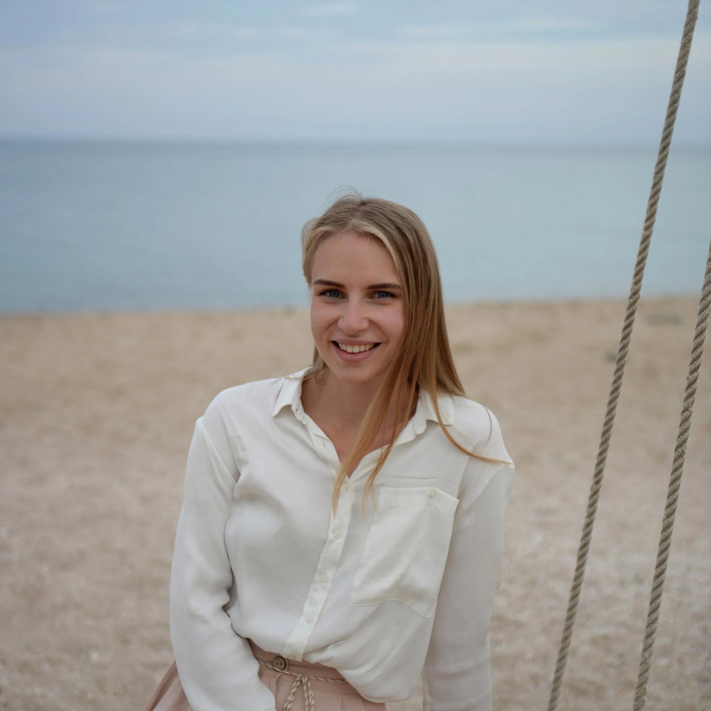

500+apmierinātu klientu
Dabiska sejas atjaunošana
Sejas atjaunošana
ar rokām
Splitmassage Daugavpilī
Padziļināts individuāls darbs ar sejas un kakla muskuļiem — bez injekcijām, steigas un standartizētiem risinājumiem.
Jūlija Emīlijafizioterapeite · Splitmassage speciāliste
Medicīniskāizglītība, fizioterapeite
120 minūtesindividuāla darba
Dabiskapieeja skaistumam

Par mani
Veselīga un apzināta
pieeja skaistumam
Esmu sertificēta Splitmassage speciāliste, fizioterapeite un bioloģijas maģistre.
Mani vienmēr ir saistījušas metodes, kas ļauj strādāt ne tikai ar ārējām izpausmēm, bet arī ar to iespējamiem cēloņiem — muskuļu saspringumu, tūsku un audu stāvokli.
Splitmassage nav parasta relaksējoša kosmētiskā masāža. Tas ir precīzs un padziļināts darbs ar sejas un kakla muskuļiem. Intensitāte tiek pielāgota individuāli, un sajūtas pirmajās procedūrās var būt neierastas.
Daudzi klienti pirmās vizuālās pārmaiņas pamana jau pēc viena seansa. Tomēr noturīgs rezultāts un nepieciešamais procedūru skaits vienmēr ir individuāls.
Sazināties ar maniPakalpojums
Splitmassage
Manuāls darbs ar sejas un kakla muskuļiem, ņemot vērā individuālās īpatnības.
Procedūra ir vērsta uz muskuļu saspringuma un tūskas mazināšanu, kā arī svaigāka izskata un dabisko sejas kontūru saglabāšanu.
- Darbs virspusējā un dziļajā līmenī
- Individuāli pielāgota procedūras intensitāte
- Bez injekcijām un aparātprocedūrām
Pieci posmi
Kā notiek procedūra
Mierīgi, secīgi un ņemot vērā jūsu pašsajūtu vizītes dienā.
- 01
Iepazīšanās
Īsa konsultācija un gaidu pārrunāšana.
- 02
Novērtēšana
Vizuāls audu stāvokļa, tūskas un saspringuma novērtējums.
- 03
Sagatavošana
Saudzīga ādas un muskuļu sagatavošana dziļākam darbam.
- 04
Splitmassage
Individuāli piemeklētas manuālās tehnikas.
- 05
Ieteikumi
Mājas kopšanas ieteikumi un nākamo vizīšu plāns.
Īstas fotogrāfijas
Pirms un pēc procedūras
Pārvietojiet atdalītāju, lai salīdzinātu fotogrāfijas. Nospiediet uz kartītes, lai atvērtu attēlus pilnā izmērā.
Rezultāts ir individuāls un var atšķirties. Fotogrāfijās sejas vaibsti nav mainīti.
Kad procedūra var būt piemērota
Indikācijas un gaidāmais efekts
- Saspringuma sajūta sejas un kakla muskuļos
- Tendence uz tūsku un noguruma pazīmēm
- Vēlme saglabāt dabiskās sejas kontūras
- Interese par manuālām metodēm bez injekcijām
Svarīgi
Kad procedūru labāk atlikt
Akūtu saslimšanu, aktīvu ādas iekaisumu, nesen veiktu procedūru vai sliktas pašsajūtas gadījumā vizīti var būt nepieciešams pārcelt.
Pirms pirmā seansa speciāliste noskaidros informāciju par veselības stāvokli un vajadzības gadījumā ieteiks konsultēties ar ārstu.
Precizēt pirms pierakstaBiežāk uzdotie jautājumi
Kas jāzina
pirms pirmās vizītes
Vai procedūra ir sāpīga?
Splitmassage ietver dziļu un precīzu darbu. Vietās ar izteiktu saspringumu sajūtas var būt jutīgas. Intensitāte vienmēr tiek pielāgota, ņemot vērā klienta pašsajūtu un atgriezenisko saiti.
Cik procedūru nepieciešams rezultātam?
Procedūru skaits ir atkarīgs no vecuma, audu stāvokļa un izvirzītā mērķa. Pēc pirmā seansa Jūlija varēs ieteikt individuālu plānu.
Kad var pamanīt pārmaiņas?
Daži klienti vizuālas pārmaiņas pamana jau pēc pirmās vizītes. Rezultāta izteiktība un noturība ir individuāla.
Kā sagatavoties seansam?
Ierodieties bez izteikta grima un iepriekš informējiet par nesen veiktām kosmetoloģiskām vai medicīniskām procedūrām, kā arī par savu pašsajūtu.
Kā var pierakstīties?
Jums ērtākajā veidā — rakstot WhatsApp vai Instagram vai zvanot pa norādīto tālruņa numuru.
Pieraksts un kontakti
Pieraksts uz procedūru
Sazinieties sev ērtākajā veidā — kopā piemeklēsim piemērotu vizītes laiku.
AdreseRīgas iela 64,
Daugavpils
Daugavpils
PieņemšanaTikai pēc iepriekšēja pieraksta
JE FacemodelingRīgas iela 64, Daugavpils
Atvērt maršrutu ↗Rīgas iela 64
Daugavpils